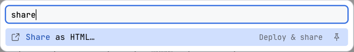

Guide / Share and move
Share as HTML
Turn a diagram, a decision file or a form into one HTML file that anyone can open in a browser, with no editor installed and no internet.
Steps
- Open the diagram, decision or form.
- Open More and choose Share as HTML….
- A save dialog called Share as HTML asks where to put the file. It suggests a name from the diagram.
- A message says Saved … It opens offline in any browser.
- Send the file. Attach it to an e-mail, put it on a wiki, drop it on a share.

What the reader sees


- A diagram is a read-only viewer. Scroll to zoom, drag to pan, use the plus, minus and fit buttons. Click an element to see its documentation. The diagram's name is at the top.
- A decision file is shown as its tables.
- A form is shown as its fields.
- The page is light or dark, following the reader's own setting.
- A small Made with Penstock line is at the foot. The bpmn.io logo stays visible in the corner.
What is in the file
A shared page is built from the file you share and nothing else. It is one HTML file with its style and script inside it.
| Source | What goes into the page | What does not |
|---|---|---|
A diagram (.bpmn, .bpmn.xml, .bpmn20.xml) | The drawing as a picture, and for every element that has a name or a documentation text: its id, its kind, its name and its documentation. The title is the name of the collaboration, or of the pool or process, or of the diagram, and the file name when none is set. | The XML itself, scripts, expressions, variable mappings, camunda: and zeebe: settings and comments. Only the drawing and the texts above are in the page. |
A decision file (.dmn) | The decisions as tables, titled with the name of the definitions. | The decision file. |
A form (.form) | The fields of the form as a table, titled with the file name. | The form file. |
Anything you wrote in an element's documentation field is in the page, in plain text. Read it before you send it, as you would any document.
The viewer
- Move around: scroll to zoom, drag to pan, pinch on a touch screen. The plus, minus and fit buttons in the corner do the same by click.
- Keys, once the picture has the focus: + and - zoom, 0 fits the diagram, the arrow keys pan, Esc closes the documentation card.
- Documentation: click an element and a card shows its name, its kind and its documentation, or No documentation. when there is none.
- Dark setting: the page follows the reader's light or dark setting. In the dark setting the colours of the picture are inverted.
Limits
- It is a snapshot. A change to the diagram is not in a page you made before, so make it again.
- The reader cannot edit the diagram on the page.
- The picture is made by the editor or the command line that shares it. A diagram that cannot be drawn gives The diagram could not be drawn, so there is nothing to share.
- The bpmn.io logo in the corner is a link. The page itself does not load it from anywhere.
Privacy
The file loads nothing and sends nothing. It makes no network request, uses no CDN, has no telemetry, and carries a content security policy that forbids all of them. Only what is in the diagram goes into the file. Read it before you send it, as you would any document.
In a terminal
penstock share orders.bpmn -o orders.htmlWithout -o the file is written next to the diagram, named after it. This is different from Export, which draws the diagram for a document or a wiki, and from penstock docs, which writes a page of prose about every process. share is free, so it can run in a pipeline: attach the page to a release.
Share from your tool
JetBrains
Only from the editor, with More | Share as HTML… as described above. To share many diagrams at once, use the command line.
VS Code
Only from the editor, with More | Share as HTML… as described above, or Penstock: Share as HTML… in the Command Palette. To share many diagrams at once, use the command line.
Command line
$ penstock share process.bpmn -o process.html
wrote process.html
One file, opens offline in any browser; nothing in it reaches the network.Without -o the file goes next to the source with the extension .html. The command takes one .bpmn, .bpmn.xml, .bpmn20.xml, .dmn or .form file. See Every command.
Common problems
- "could not be shared" and "Nothing was written".
- The file could not be read as a diagram. Open it in the editor to see why.
- "is not a .bpmn, .dmn or .form file".
- Share takes one of those file types only.
- The reader cannot edit the diagram.
- Right. It is a viewer. To let someone edit, send the
.bpmnfile. - I need a picture, not a page.
- Use Export.